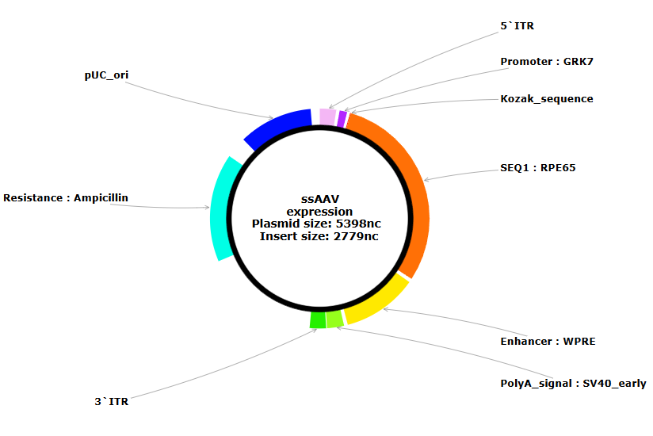
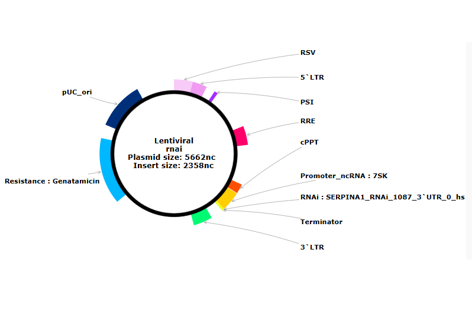
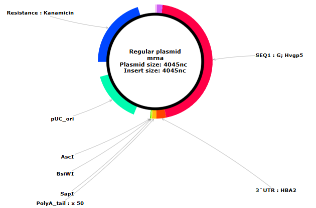
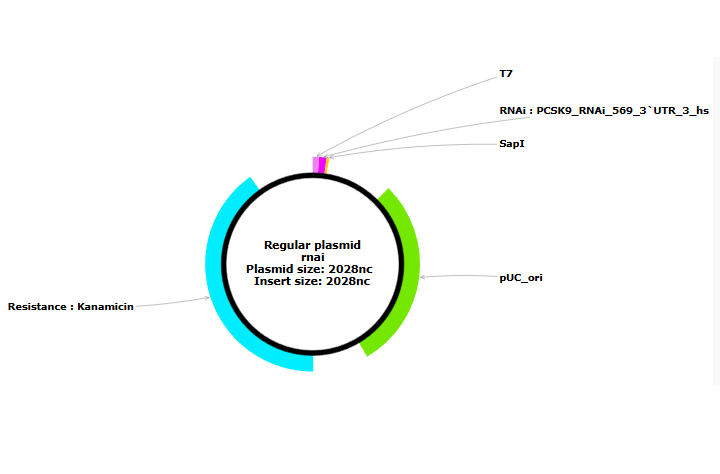

platform for designing nucleic acid therapeutics - example therapeutic design
This page presents the key technological areas of the BioRedis platform, including the design of gene vectors, gene expression silencing mechanisms, and therapeutic strategies based on in vitro transcription, including the design of mRNA vaccines, as well as applications in in vivo systems.

Project of a therapy for Leber congenital amaurosis based on restoring the expression of a correct, healthy variant of the RPE65 gene.

Project of a therapy for Alpha-1 Antitrypsin Deficiency based on silencing SERPINA1 gene variant causing production of a misfolded protein.

Project of an mRNA vaccine against Nipah virus infection based on encoding the viral G glycoprotein to elicit protective immune responses.

Project of an in vitro therapy for familial hypercholesterolemia based on shRNA-mediated silencing of the PCSK9 gene.